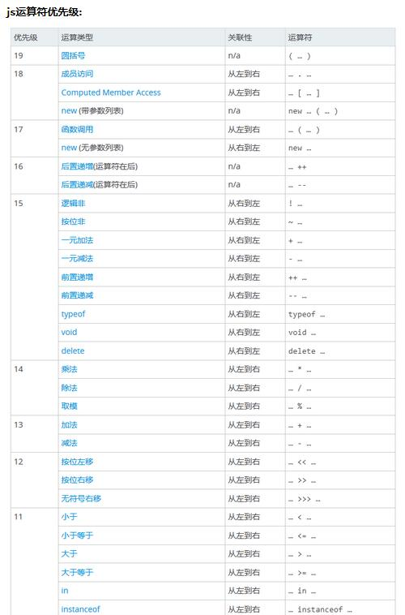

https://www.jb51.net/article/79437.htm
此题是我综合之前的开发经验以及遇到的JS各种坑汇集而成。此题涉及的知识点众多，包括
变量定义提升、
this指针指向、
运算符优先级、
原型、
继承、
全局变量污染、
对象属性及原型属性优先级等等。
此题包含7小问，分别说下。
第一问
先看此题的上半部分做了什么，首先定义了一个叫Foo的函数，之后为Foo创建了一个叫getName的静态属性存储了一个匿名函数，之后为Foo的原型对象新创建了一个叫getName的匿名函数。之后又通过函数变量表达式创建了一个getName的函数，最后再声明一个叫getName函数。
第一问的 Foo.getName 自然是访问Foo函数上存储的静态属性，自然是2，没什么可说的。
第二问
第二问，直接调用 getName 函数。既然是直接调用那么就是访问当前上文作用域内的叫getName的函数，所以跟1 2 3都没什么关系。此题有无数面试者回答为5。此处有两个坑，一是变量声明提升，二是函数表达式。
1、变量声明提升
即所有声明变量或声明函数都会被提升到当前函数的顶部。
例如下代码:
?
1
2
3
console.log('x' in window);//true
var x;
x = 0;
代码执行时js引擎会将声明语句提升至代码最上方，变为：
?
1
2
3
var x;
console.log('x' in window);//true
x = 0;
2、函数表达式
var getName 与 function getName 都是声明语句，区别在于 var getName 是函数表达式，而 function getName 是函数声明。关于JS中的各种函数创建方式可以看 大部分人都会做错的经典JS闭包面试题 这篇文章有详细说明。
函数表达式最大的问题，在于js会将此代码拆分为两行代码分别执行。
例如下代码：
console.log(x);//输出：function x(){}
var x=1;
function x(){}
实际执行的代码为，先将 var x=1 拆分为 var x; 和 x = 1; 两行，再将 var x; 和 function x(){} 两行提升至最上方变成：
var x;
function x(){}
console.log(x);
x=1;
所以最终函数声明的x覆盖了变量声明的x，log输出为x函数。
同理，原题中代码最终执行时的是：
function Foo() {
getName = function () { alert (1); };
return this;
}
var getName;//只提升变量声明
function getName() { alert (5);}//提升函数声明，覆盖var的声明
Foo.getName = function () { alert (2);};
Foo.prototype.getName = function () { alert (3);};
getName = function () { alert (4);};//最终的赋值再次覆盖function getName声明
getName();//最终输出4
第三问
第三问的 Foo().getName(); 先执行了Foo函数，然后调用Foo函数的返回值对象的getName属性函数。
Foo函数的第一句 getName = function () { alert (1); }; 是一句函数赋值语句，注意它没有var声明，所以先向当前Foo函数作用域内寻找getName变量，没有。再向当前函数作用域上层，即外层作用域内寻找是否含有getName变量，找到了，也就是第二问中的alert(4)函数，将此变量的值赋值为 function(){alert(1)}。
此处实际上是将外层作用域内的getName函数修改了。
注意：此处若依然没有找到会一直向上查找到window对象，若window对象中也没有getName属性，就在window对象中创建一个getName变量。
之后Foo函数的返回值是this，而JS的this问题博客园中已经有非常多的文章介绍，这里不再多说。
简单的讲，this的指向是由所在函数的调用方式决定的。而此处的直接调用方式，this指向window对象。
遂Foo函数返回的是window对象，相当于执行 window.getName() ，而window中的getName已经被修改为alert(1)，所以最终会输出1
此处考察了两个知识点，一个是变量作用域问题，一个是this指向问题。
第四问
直接调用getName函数，相当于 window.getName() ，因为这个变量已经被Foo函数执行时修改了，遂结果与第三问相同，为1
第五问
new Foo.getName(); ,此处考察的是js的运算符优先级问题。

通过查上表可以得知点（.）的优先级高于new操作，遂相当于是:
new (Foo.getName)();
所以实际上将getName函数作为了构造函数来执行，遂弹出2。